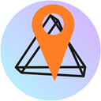

By default there is no access to PhotoPrism Apps (except the demo) from this extension.
Left Click on the extenstion icon to access the Popup and Grant Access when you 1st browse your PhotoPrism site.
Set size of the map:
Access allowed to these sites:
Tick a site from the list above, then click Revoke Access to remove it.
If you revoke a site, then you will have to close and reopen that site to remove the extension's javascript.